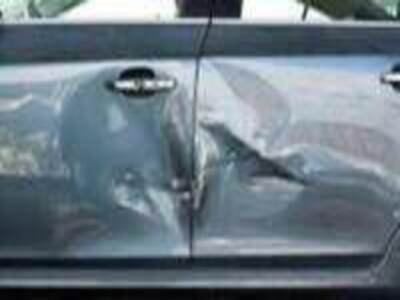
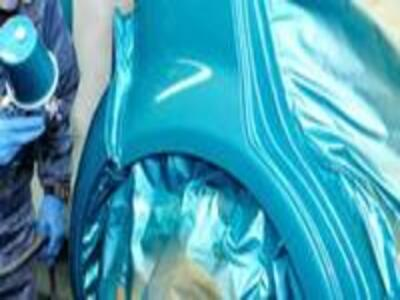

Primer Paso
El primer paso en la restauración de la chapa del coche es diagnosticar el estado del vehículo y de la chapa misma. Dependiendo de la gravedad del daño y el lugar en que se encuentre, se podrá determinar qué tipo de trabajo hay que realizar.
Eso sí, debemos decir que la gravedad del daño en la chapa no se descubrirá por completo, sino hasta desmontar el coche. También es necesario limpiar bien la carrocería para observar mejor cualquier desperfecto que tenga la chapa para no pasarla por alto.
Segundo Paso
El segundo paso es la Pintura y para poder realizarlo se debe llevar acabo una serie de pasos.
Primero se preparar la superficie consiste en limpiarla de cualquier impureza.
Una vez que el auto esté limpio hay que lijar para quitar la pintura anterior.
Cuando termines de lijar y limpiar, debes enmascarar para evitar que queden manchas permanentes de la masilla y pintura, Luego debes aplicar la masilla, Deja que la masilla seque y lija.
Luego de que la masilla haya secado puedes aplicar la base.
Después se debe aplicar la pintura, respeta los tiempos de secado para aplicar las capas siguientes.
Cuando la pintura ya se seco se debe usa un barniz automotriz de calidad para darle brillo a tu auto.
Tercer Paso
El pulido y el abrillantado son técnicas que permiten perfeccionar, aumentar o restaurar el brillo de los acabados de un coche o moto, durante la fase de reparación de carrocería o retoque de pintura.
Trabajos que Realizamos

.jpg)